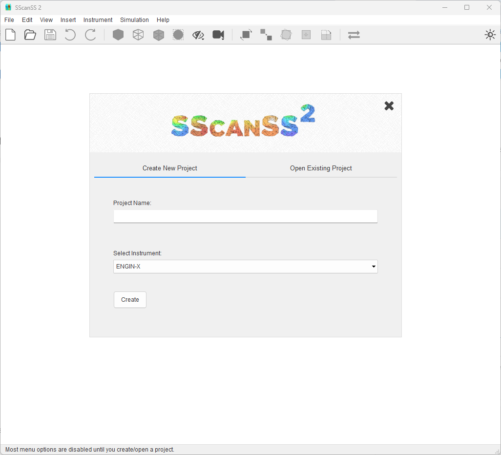

User Interface¶
After starting SScanSS 2, the new project dialog will be opened because SScanSS 2 cannot be used without specifying an instrument. To close the new project dialog without creating a new project, press the Esc key. When no project exists, several actions will be disabled.
The main user interface shown below consist of a title bar, a menu bar, a standard toolbar, a status bar, and a graphic window where 3D object will be displayed. The title bar displays the name of the project once it has been saved to disk. The status bar displays messages about the state of the application and tips when hovering over a menu items and the name of the instrument selected in the project.
{kind=link}
Create new project¶
The new project dialog can be opened using the shortcut Ctrl + N or by clicking File > New Project in the main menu.
{kind=link}
To create a new project:
Type in the name of the project
Select the Instrument for the project
Click the Create button
The new project dialog will close as soon as the project is created.
Open project¶
Project files are written using the hdf5 file format with a .h5 extension. The project files stores all the information required for the simulation including the instrument description.
To open an existing project:
Press Ctrl + O or click File > Open Project in the main menu.
{kind=link}
Locate the file in the file dialog and click open.
Open recent project¶
To open recent project (last 10), Click File > Open Recent and click the desired file. Recent projects (last 5) can also be opened from the new project dialog.
Click the Open Existing Project tab.
Double-click on a recent file or double-click Open … to show file dialog.
{kind=link}
Save project¶
To save a project:
Press Ctrl + S or click File > Save Project.
{kind=link}
You must enter a name for the file if you are saving it for the first time.
Save with a different name¶
To save a project with a different name, click File > Save As…*, type in the file name, and click save.
Change preferences¶
The Preferences contains settings to customize SScanSS 2. The preference dialog can be opened using the shortcut Ctrl + Shift + P or by clicking Edit > Preferences in the main menu.
The preferences dialog divides the setting into 3 sections: General, Graphics and Simulation.
In the General section, global settings such as custom instrument path and update checks can be changed.
In the Graphics section, the colour and sizes of most rendered object can be changed, all the graphics settings are self-explanatory.
In the Simulation section, the simulation accuracy, order etc. can be tweaked, each setting is explained in detail here.
{kind=link}
Settings can be global or project specific. For the latter, clicking Accept will save the changes to the project settings and Reset returns the project settings to their default values. The project setting will be written to the hdf save file on saving the project. To change the global defaults select Reset Default or Set As Default from the Reset or Accept drop-down menu respectively. General settings are global only while other settings could be either. Clicking Cancel will close the dialog without saving any changes.
Note
The Accept button is disabled if no values are changed.
Undo and Redo¶
SScanSS 2 is designed so that most operations that affects the project data can be undone. You can undo and redo an action using the shortcut Ctrl + Z and Ctrl + Y respectively. The undo history can be viewed by clicking Edit > Undo History.
Tip
You can undo or redo actions from the toolbar. Also from the menu by clicking Edit > Undo or Edit > Redo
{kind=link}
{kind=link}
The following operations cannot be undone:
Visualization actions (e.g. changing the camera view),
Preference changes,
Running a Simulation,
Exporting data,
Switching to a different instrument.